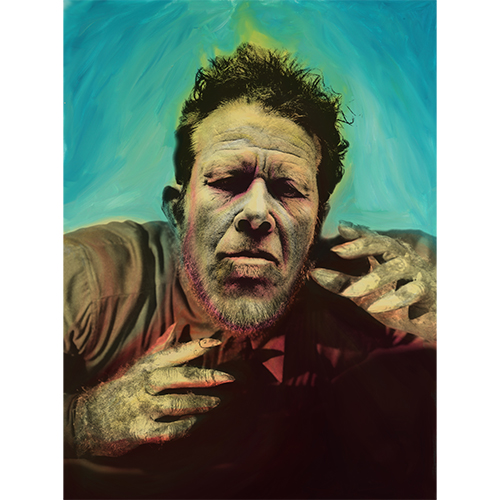

Notes
This composition was later repurposed by the artist as a limited-edition print in the Vinyl Chord: A Revolutionary Record Store series.

This work references Lon Chaney, Jr. as the Wolf Man. Representative image: here .
Notes
This work also references Tom Waits. Representative image: here .